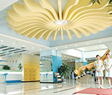
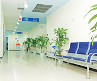
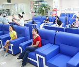
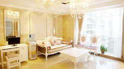
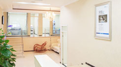
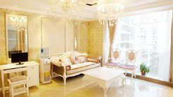
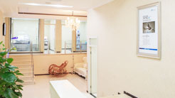
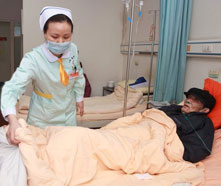
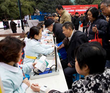

医院简介About Us
致成长·足迹To Grow · Trail



♦重庆爱德华医院成为重庆市非营利性医疗机构
♦2013年全国不孕不育疑难杂病会诊基地
♦重庆市中山医院技术协作医院
♦第二军医大学附属上海长海医院技术协作医院
♦复旦大学附属上海中山医院技术协作医院
♦健康中国万里行全国健康诚信示范医院
♦重庆爱德华医院价格诚信优秀单位
♦我市首个孕妇胎教学校落户重庆爱德华医院
♦中华健康管理论坛 重庆爱德华获两项荣誉
♦重庆首家慈善门诊落户重庆爱德华医院
致成长·榜样To Grow · Example
有一种品质，注定被传承；有一种榜样，注定被铭记。对前沿品质医疗的传承与超越，共享优势医疗资源，率先掌握源自英国、美国、日本等地先进的医疗研究成果，执行高品质的医疗技术标准，使重庆爱德华医院无论在学科建设及临床科研上都取得了丰硕的成果，成为了华东乃至全国医疗机构的标杆。
致感恩·回馈To Thanksgiving · Feedvack
-

爱德华·热心公益
爱德华·热心公益春风化雨，润物无声。重庆爱德华医院在服务人类健康的道路上跋涉9载，一直热心于公益事业，尤其表现在关注贫困山区的患者方面，在公益事业的路上，重庆爱德华医院正在坚定脚步，大步向前。
-

爱德华•社区服务
爱德华•社区服务取信于民，服务于民。在过去的9年里，重庆爱德华医院先后327次进社区进行义务诊疗活动，长期和周围社区保持医疗活动联系，为一方居民的身体健康做忠诚的卫士，9年来，从未间断。
-
爱德华•抗震救灾
爱德华•抗震救灾一方有难，八方支援。作为医疗工作优秀单位，每次大灾大难的现场，都有重庆爱德华医院医护人员的身影。后方捐物捐钱，帮助国家度过危难，帮助同胞越过人生的坎坷，我们责无旁贷。
致腾飞·新时代医者使命To Soar · A new era of medical mission
爱德华人文医疗·享受健康快乐Edward medical humanities · Enjoy a health happy
一份耕耘，一份收获。凭借着医院强大的科研、临床技术实力，医技医德在业内的影响，重庆爱德华医院先后被国家及重庆市相关卫生管理部门评为"医疗诚信单位"、"品质医院"等殊荣。